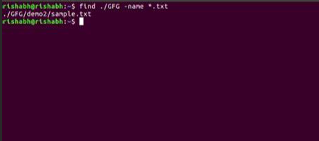
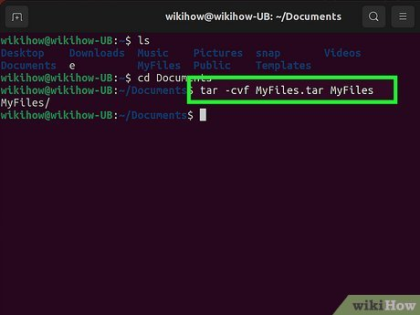
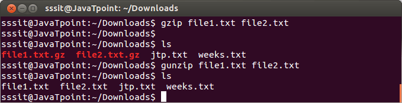
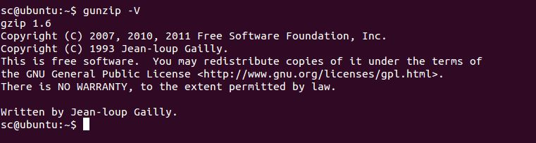
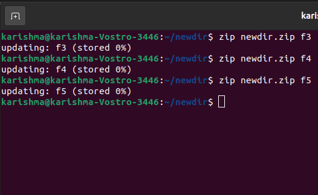
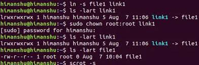
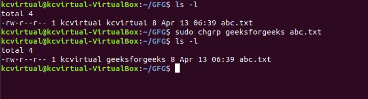

The find command searches for files and directories in a directory hierarchy based on specified conditions.
Locate files by name, type, size, permissions, or modification time.
Combine with -exec to execute other commands on matching files.
Supports advanced filtering options with expressions like -iname for case-insensitive matches.
Example 1: Find all text files in the /home directory: find /home -name "*.txt"
Example 2: Find files modified in the last 7 days: find /var/log -mtime -7
Example 3: Search for files larger than 100MB: find / -size +100M

Tar
The tar command archives files and directories into a single tarball.
Create, extract, and list files from an archive.
Supports compression with gzip or bzip2.
Preserves file permissions and directory structure.
Example 1: Create an archive: tar -cvf archive.tar /path/to/files
Example 2: Extract an archive: tar -xvf archive.tar
Example 3: Create a compressed archive: tar -czvf archive.tar.gz /path/to/files

Gzip
The gzip command compresses files to save storage space.
Reduces file size for efficient storage and transfer.
Replaces original file with a .gz compressed version.
Works seamlessly with the tar command for archiving and compressing.
Example 1: Compress a file: gzip file.txt
Example 2: Compress multiple files: gzip file1.txt file2.txt
Example 3: Check compression ratio: gzip -l file.txt.gz

Gunzip
The gunzip command decompresses files compressed with gzip.
Restores files compressed with gzip.
Automatically removes the .gz extension after decompression.
Supports decompressing files in bulk.
Example 1: Decompress a file: gunzip file.txt.gz
Example 2: Decompress multiple files: gunzip file1.gz file2.gz
Example 3: Keep the compressed file after decompression: gunzip -c file.txt.gz > file.txt

Zip
The zip command compresses files and creates a zip archive.
Supports adding multiple files to a single archive.
Widely used for compatibility with Windows systems.
Provides options for password protection.
Example 1: Create a zip archive: zip archive.zip file1.txt file2.txt
Example 2: Add files to an existing archive: zip -u archive.zip file3.txt
Example 3: Password-protect a zip archive: zip -e archive.zip file1.txt

Chmod
The chmod command changes file permissions.
Modify read, write, and execute permissions for user, group, and others.
Use symbolic or numeric modes for permission changes.
Essential for controlling file access and security.
Example 1: Set permissions to read, write, and execute for the owner, and read for others: chmod 744 file.sh
Example 2: Add execute permissions to a file: chmod +x script.sh
Example 3: Remove write permissions for the group: chmod g-w file.txt
Chown
The chown command changes file ownership.
Assign ownership to a specific user and group.
Supports recursive changes for directories.
Useful for managing file ownership in multi-user systems.
Example 1: Change owner and group: chown user:group file.txt
Example 2: Change owner recursively: chown -R user:group /path/to/directory
Example 3: Change only the owner: chown user file.txt

Chgrp
The chgrp command changes the group ownership of a file or directory.
Efficient for managing group access to shared files.
Supports recursive changes for entire directories.
Useful for managing project directories shared by a team.
Example 1: Change group ownership: chgrp group file.txt
Example 2: Change group ownership recursively: chgrp -R group /path/to/directory
Example 3: Verify group ownership changes: ls -l file.txt

Ps
The ps command displays information about active processes.
Provides a snapshot of current processes.
Options include viewing user processes, all processes, and specific process details.
Combine with tools like grep to filter results.
Example 1: List all processes: ps aux
Example 2: View processes for a specific user: ps -u username
Example 3: Search for a specific process: ps aux | grep process_name